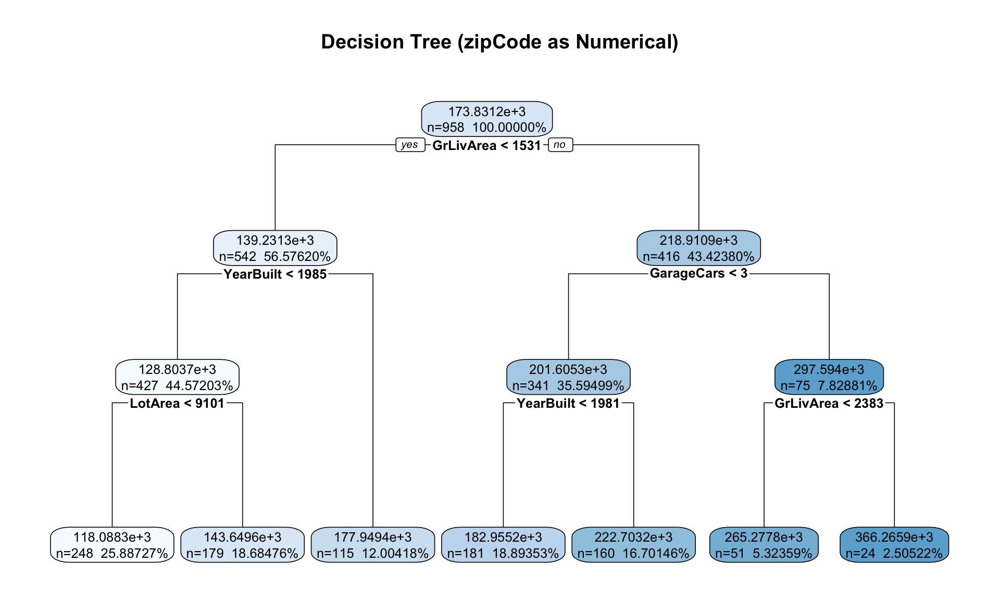
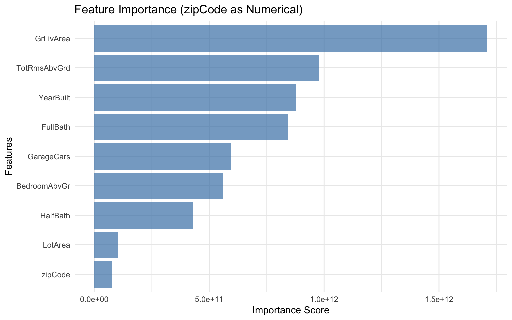
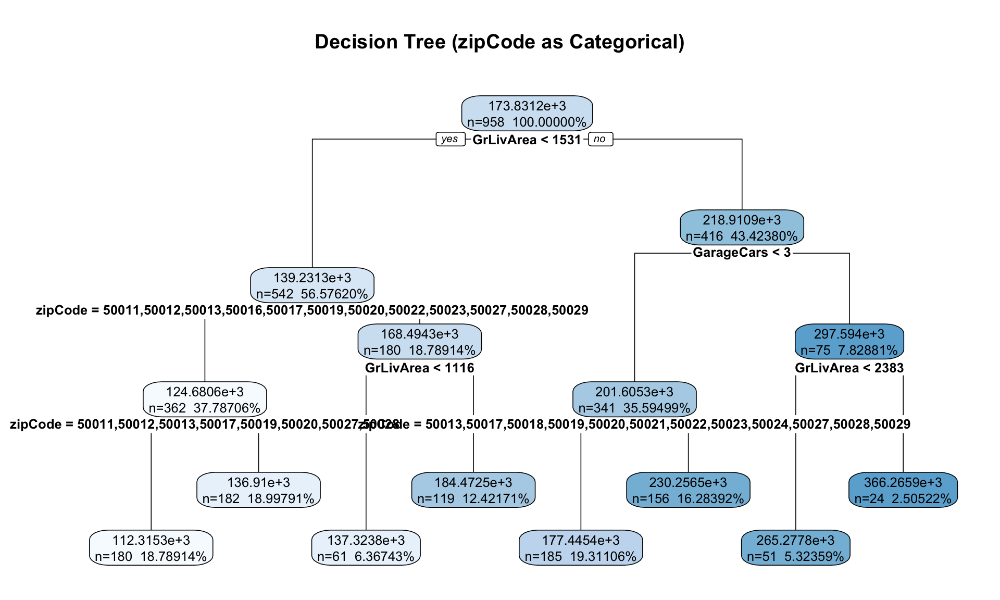
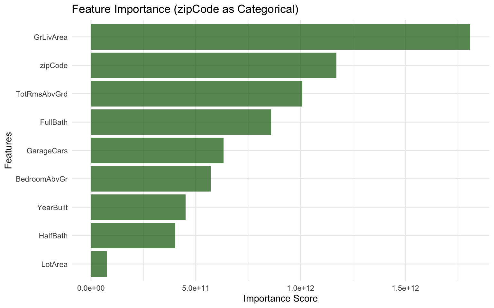

Model built with 7 terminal nodesDecision Tree Challenge
Feature Importance and Categorical Variable Encoding
🌳 Decision Tree Challenge - Feature Importance and Variable Encoding Link to Discussion
Let’s assume we want to predict house prices and understand which features matter most. The key question is: How does encoding categorical variables as numbers affect our understanding of feature importance?
The Ames Housing Dataset 🏠
We are analyzing the Ames Housing dataset which contains detailed information about residential properties sold in Ames, Iowa from 2006 to 2010. This dataset is perfect for our analysis because it contains a categorical variable (like zip code) and numerical variables (like square footage, year built, number of bedrooms).
The Problem: ZipCode as Numerical vs Categorical
Key Question: What happens when we treat zipCode as a numerical variable in a decision tree? How does this affect feature importance interpretation?
The Issue: Zip codes (50010, 50011, 50012, 50013) are categorical variables representing discrete geographic areas, i.e. neighborhoods. When treated as numerical, the tree might split on “zipCode > 50012.5” - which has no meaningful interpretation for house prices. Zip codes are non-ordinal categorical variables meaning they have no inherent order that aids house price prediction (i.e. zip code 99999 is not the priceiest zip code).
Data Loading and Model Building
Tree Visualization

Feature Importance Analysis

Critical Analysis: The Encoding Problem
Warning⚠️ The Problem Revealed
What to note: Our decision tree treated zipCode as a numerical variable. This leads to zip code being unimportant. Not surprisingly, because there is no reason to believe allowing splits like “zipCode < 50012.5” should be beneficial for house price prediction. This false coding of a variable creates several problems:
- Potentially Meaningless Splits: A zip code of 50013 is not “greater than” 50012 in any meaningful way for house prices
- False Importance: The algorithm assigns importance to zipCode based on numerical splits rather than categorical distinctions OR the importance of zip code is completely missed as numerical ordering has no inherent relationship to house prices.
- Misleading Interpretations: We might conclude zipCode is not important when our intuition tells us it should be important (listen to your intuition).
The Real Issue: Zip codes are categorical variables representing discrete geographic areas. The numerical values have no inherent order or magnitude relationship to house prices. These must be modelled as categorical variables.
Proper Categorical Encoding: The Solution
Now let’s repeat the analysis with zipCode properly encoded as categorical variables to see the difference.
Categorical Encoding Analysis
Tree Visualization: Categorical zipCode

Feature Importance: Categorical zipCode

Discussion Questions for Challenge
- Numerical vs Categorical Encoding: There are four models above, two in R and two in Python. For each language, the models differ by how zip code is modelled, either as a numerical variable or as a categorical variable. Given what you know about zip codes and real estate prices, how should zip code be modelled, numerically or categorically?
Given what I know about zip codes and real estate prices, zip code should be modelled as categorical because when the zipcode is treated as numerical, the tree ends up splitting for example “zipcode >50012.5”. This does not make sense because zip code of 50013 is not “greater than” 50012 in terms of house prices. Logially, zip codes do play a significant role in prediciting house prices as zip codes with more income tend to have houses that are worth more. On the other hand, the right way to model zip code would be categorical where we treat it as discrete cateogies. When zipcode is numerical, the feature importance ranks zipcode very low whereas when zipcode is categorical, there is high importance as it becomes one of the most important features. Moreover, when zip codes are treated as categories, the decision tree can split on “zipcode=-50010” vs “zipcode==50010” and make clear distinctions on different neightborhoods. In regards to real estate prices, it would be a wrong business decision to use numerical encoding since you would conclude location does not matter for house prices. Therefore, data scientists should be very careful on how they prepare their data as it can lead to a common mistake that makes wrong business insights.
- R vs Python Implementation Differences: When modelling zip code as a categorical variable, the output tree and feature importance differs quite significantly between R and Python. Investigate why this is the case. Which language would you say does a better job of modelling zip code as a categorical variable? Why is this the case? Do you see any documentation suggesting the other language does a better job? If so, please provide a quote from the documentation.